Chapter 7 The Basics of Coding in R
7.1 Arithmetic commands
As mentioned above, you can pass commands to the R-engine via the console. R has arithmetic commands for doing basic math operations, including addition (+), subtraction (-), multiplication (*), division (/), and exponentiation (^).
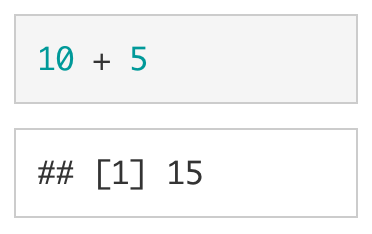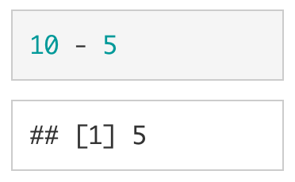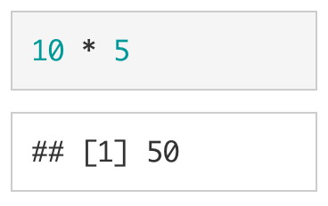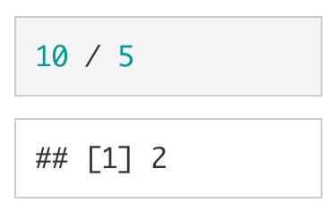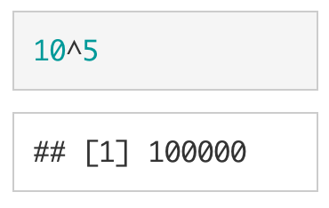
R will automatically follow the PEMDAS order of operations (BEDMAS if you are from Canada or New Zealand). Parentheses can be used to tell R what parts of the equation should be evaluated first. As shown below and as expected, (10 + 5) * 2 is not equivalent to 10 + 5 * 2.
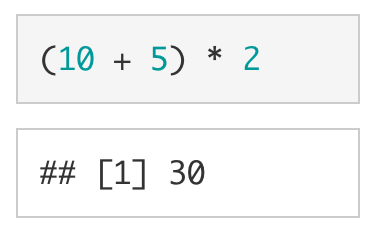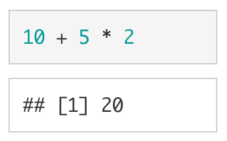
7.2 Creating Variables
You can create variables using the assignment operator (<-). Whatever is on the left of the assignment operator is saved to name specified on the right of the assignment operator. I like to imagine that there is a box with a name on it and you are placing a value, inside of the box. For example, if we wanted to place 10 into a variable called my_number, we would write:
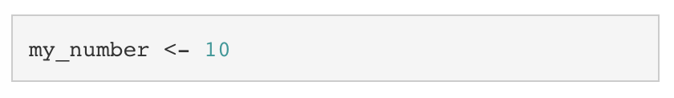
If we want to see what is stored in my_number, we can simply type my_number into the console and press enter. We are essentially asking the computer, “What’s in the box with my_number written on it?”
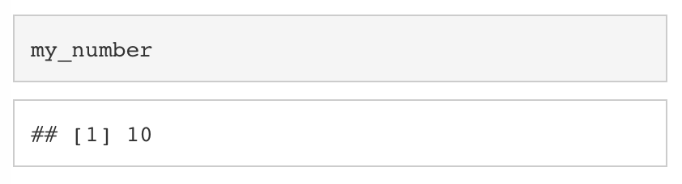
If we want to overwrite my_number with a new value, we simply assign a new value to my_number.
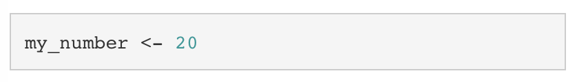
Looking at my_number again, we can see that it is now 20.
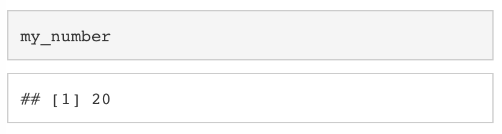
We can treat variables just like we would the underlying values. For example, we can add 5 to my_number by using +.
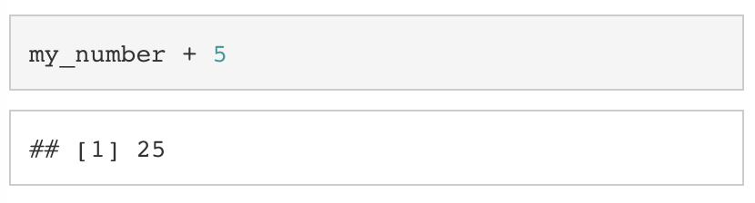
Keep in mind, the above operation does not save the result of my_number + 5 to my_number. To do that, we would have to assign the result of my_number + 5 to my_number.
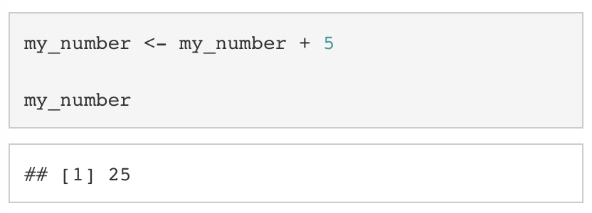
If we want to remove a variable from our environment, we can use rm().
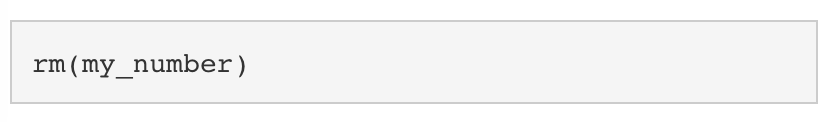
7.2.1 Types of Variables
In R, there are four basic types of data: (1) logical values (also called booleans), which can either be TRUE or FALSE, (2) integer values, which can be any whole number (i.e.., a number without digits after the decimal place), (3) double values, which can be any number with digits before and after the decimal place, and (4) character values (also called strings), which are pieces of text enclosed in quotation marks (").
| Type | Examples |
|---|---|
| Logical/Boolean | TRUE, FALSE |
| Integer | 10L, -10L |
| Double | 10.50, -10.50 |
| Character | "Hello", "World" |
7.2.2 Vectors
7.2.2.1 Atomic Vectors
A collection of values is called a vector. If they are all of the same type, we call them atomic vectors. In R, we use the c() command to concatenate (or combine) values into an atomic vector.
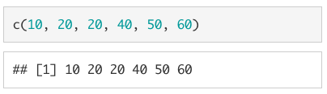
Just as we did with the scalar values above, we can assign a vector to a variable.
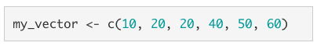
To print out the entire vector, we simply type my_vector into the console.
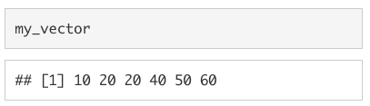
In order to select just one value from the vector, we use square brackets ([]). For example, if we wanted the third value from my_vector we would type my_vector[3]1.
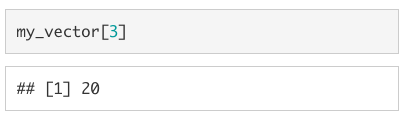
If we want to replace a specific value in a vector, we use the assignment operator (<-) in conjunction with the square brackets ([]).
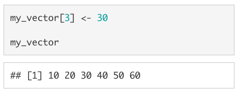
As with single-value objects we can perform arithmetic operations on vectors, but the behaviour is not identical. If the vectors are the same length, each value from one vector will be paired with a corresponding value from the other vector. See below for an example of this in action.
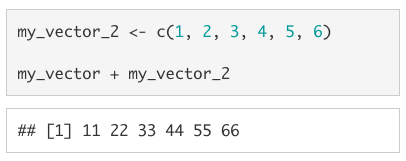
If the vectors of different lengths, the shorter vector will be recycled (i.e., repeated) to be the same length as the longer vector.
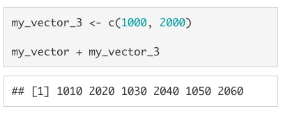
This also works when the longer vector is not a multiple of the shorter vector, but you will get the warning: longer object length is not a multiple of shorter object length.
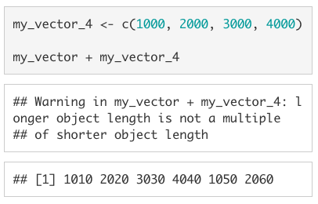
7.2.2.1.0.1 1. Unlike most other coding languages (e.g., python), indices in R start at 1 instead of 0. For instance, if you want to select the first element of a vector, you would write my_vector[1] instead of my_vector[0]. A second difference to keep in mind is that the - is used in R to remove whichever value is in the spot indicated by the index value. Using vector[-2] on the vector c(10, 20, 30, 40, 50, 60) would return c(10, 30, 40, 50, 60) in R. In python, it would return 50.
7.2.2.2 Lists
A vector that can accomodate more than one type of value (e.g., a double AND a character) is called a list. To create a list, we use list() instead of c(). If we wanted to create a vector with the values 5L, 10, "fifteen", and FALSE we would use list(5L, 10, "fifteen", FALSE).
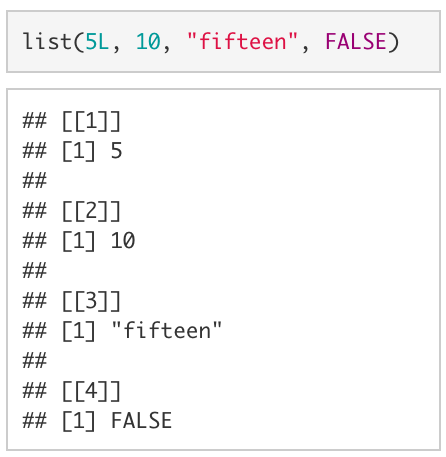
Although lists are an incredibly powerful type of data structure, dealing with them can be quite frustrating (especially for beginning coders). Since you are unlikely to need to know the inner workings of lists for anything we will be doing in this course, I have chosen not to include much about them here. However, as you become a more advanced user, learning to leverage lists will allow you to write code that is far more efficient.
7.2.3 Data Frames
In R you will mostly be working with data frames. A data frame is technically a list of atomic vectors. For our purposes, we can think of a data frame as a spread sheet with columns of variables and rows of observations.
Let’s look at a data frame that is automatically loaded when you open R, mtcars. Type mtcars to print out the data frame.
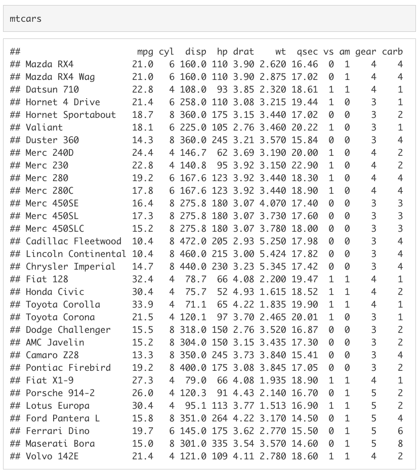
The data frame mtcars has a row for 32 cars featured in the 1974 Motor Trend magazine. There is a column for the car’s miles per gallon (mpg), number of cylinders (cyl), engine displacement (disp), horse power (hp), rear axle ratio (drat), weight in thousands of pounds (wt), quarter-mile time (qsec), engine shape (vs), transmission type (am), number of forward gears (gear), and number of carburetors (carb).
With data frames, you can extract a value by including [row, col] immediately after the object. For example, if we wanted to extract the number of gears in the Datsun 710 we could use mtcars[3, 10] to extract the value stored in the third row, tenth column.
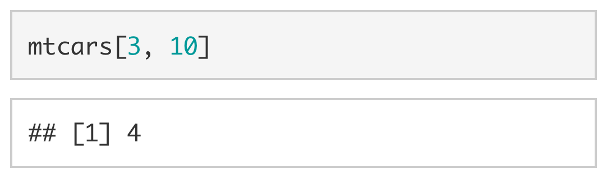
Since the rows and columns have names, we can also be explicit and use the name of the row ("Datsun 710") and the name of the column ("gear") instead of the row and column indices.
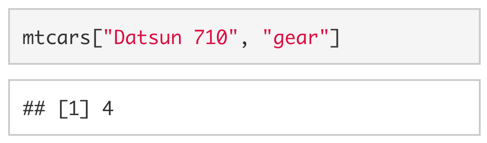
We can also extract an entire column by dropping the index value for the row. Since you don’t specify a given row, the computer assumes you want all of the values in the column. For example, to extract all values stored in the gear column, we could use [, 10] or [, "gear"].
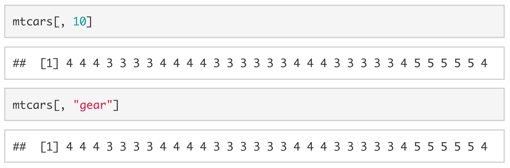
To extract an entire row, we drop the column index. To extract all of the values associated with the Datsun 710, we would drop the column index (e.g., [3, ] or ["Datsun 710", ])
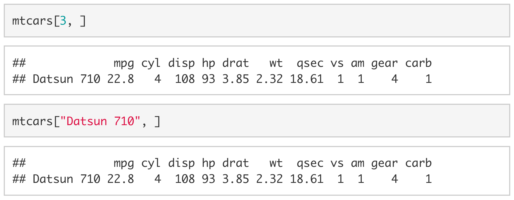
You can also extract columns using $ followed by the column name without quotes.
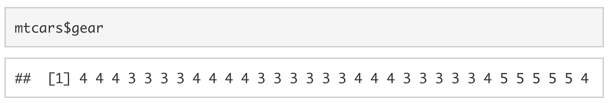
If we want to extract multiple columns (or multiple rows) we use vectors. For example, if we wanted the number of gears and carburetors in the Datsun 710 and the Duster 360 we would use [c("Datsun 710", "Duster 360"), c("gear", "carb")] or [c(3, 7), c(10:11)].
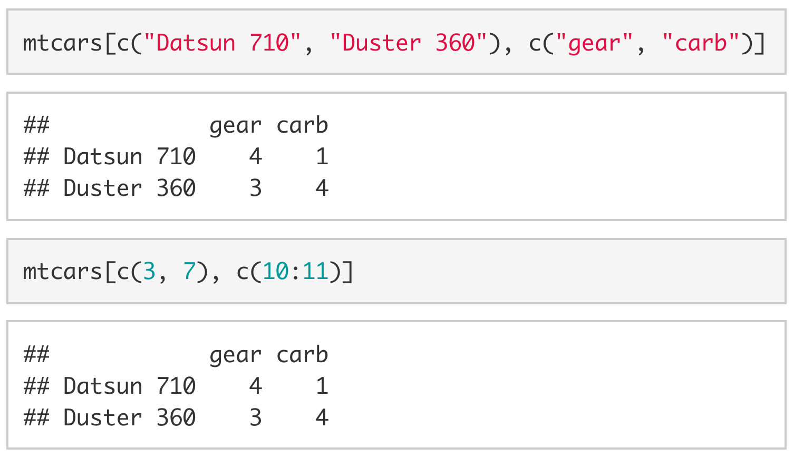
7.3 Functions
Up to this point, we have been more-or-less directly telling R what we want it to do. This is great if we want to understand the processes that underlie R, but it can be incredibly time-consuming. Thankfully, we have functions. Functions are essentially pre-packaged snippets of code that take one or more pieces of input (called arguments) and return one or more pieces of output (called values). For example, length() is a function that takes a vector as its sole argument and returns the length of the vector as its sole value.
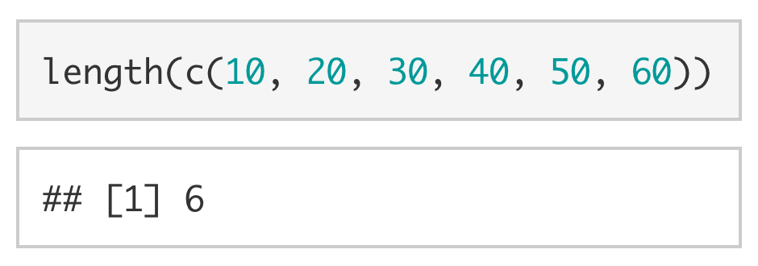
The function unique() also takes a vector as its primary argument, but—instead of returning the length of the vector as its value—it returns only the unique values of that vector.
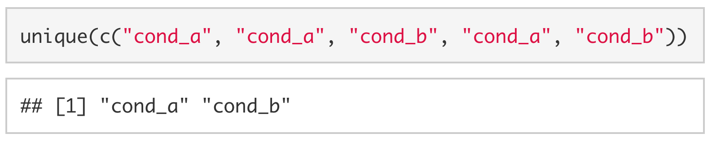
The mean() function and sd() function are two functions that you will end up using a lot. The former (mean()) takes a numeric vector and returns the average of the vector.
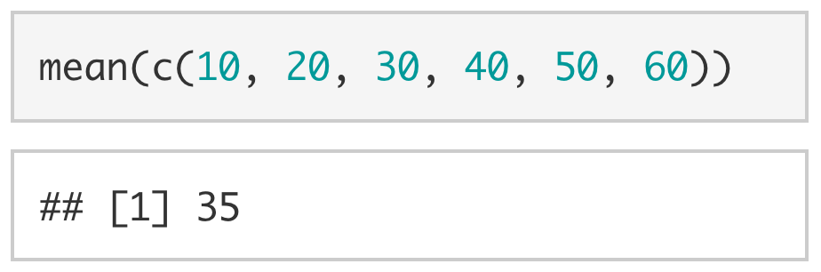
The latter (sd()) also takes a numeric vector, but it returns the standard deviation of the vector instead.
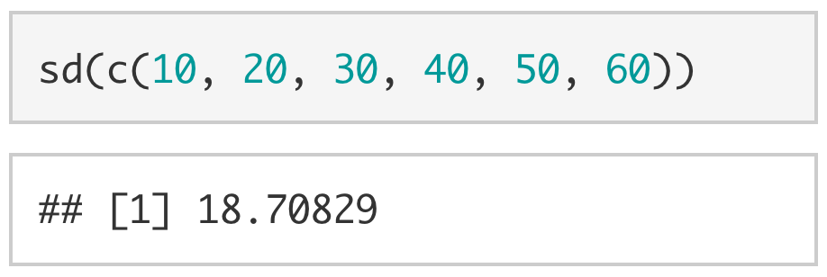
Although it is more conceptual, it is also useful to mention the typeof() function here. The function typeof() takes any object and tells you what type of variable it is.
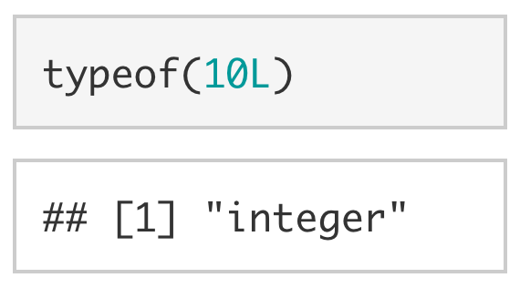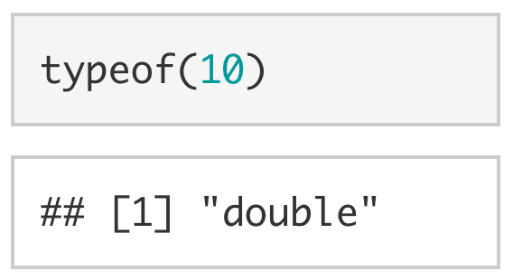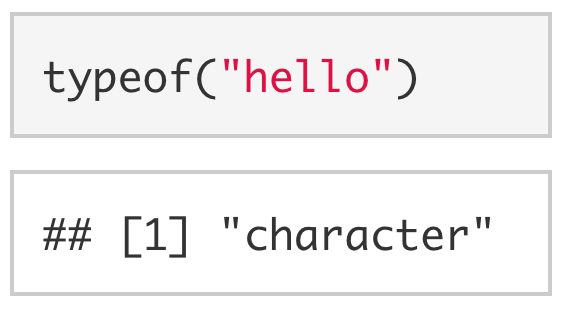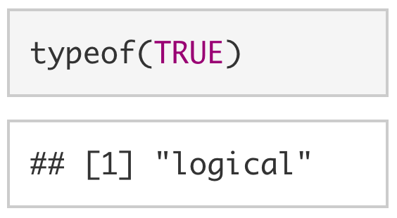
Using the suite of as.*() functions (e.g., as.numeric(), as.character(), as.logical(), as.integer()), we can likewise coerce objects to other types.
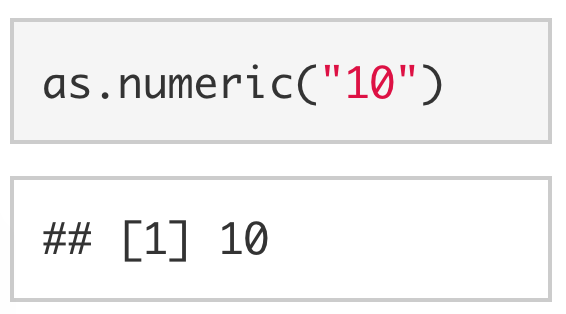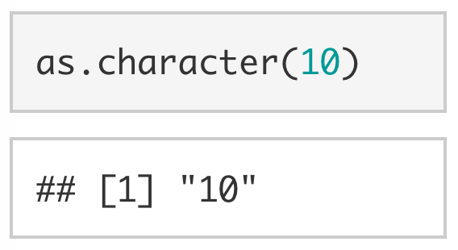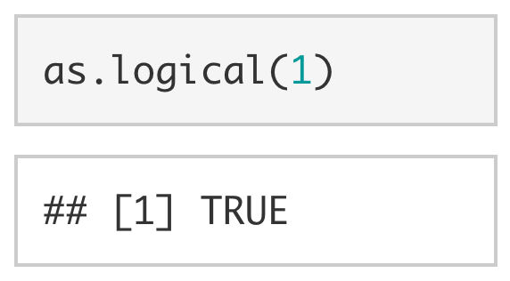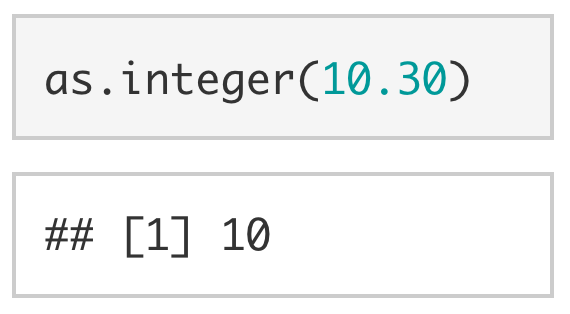
7.4 Help Documentation
Sometimes when working in R you will want to know more about a function. For example, you might want to know what arguments the function sd() takes. You can use ? at the beginning of any function call to display the help documentation for that function.
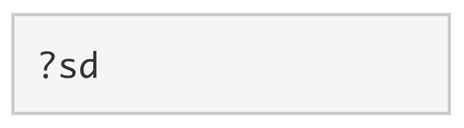
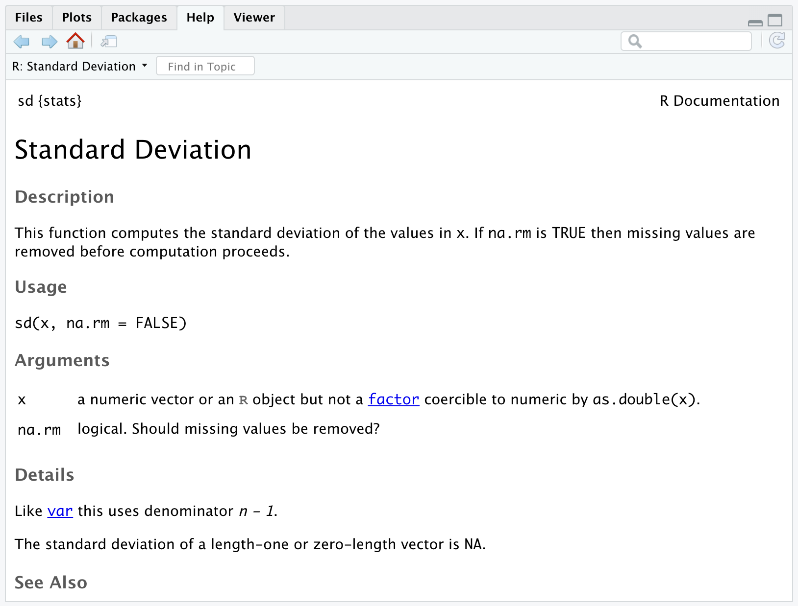
From the help documentation we can see that sd() takes two arguments: (1) An R object and (2) a logical value indicating whether NAs (unknown values) should be removed before the standard deviation is calculated.
Typically R will infer, based on the order of the arguments, what values correspond to which arguments. For example, since sd() expects that the argument x will be provided first and the argument na.rm will be provided second, the following works:
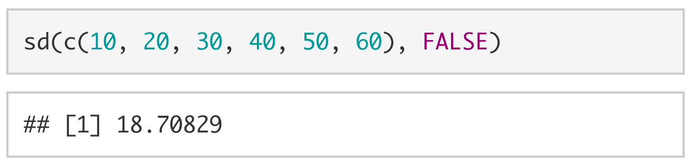
However, we can also explicitly tell R what values are associated with which arguments.
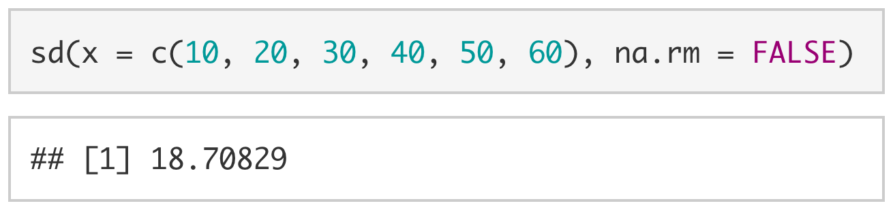
The help documentation for a function often also includes an example of how to use the function and details on what the expected output will be.
7.5 Googling your error message
You will come across many messages in your time using RStudio. Some messages are error messages and some are warning messages. If a message says warning message then R was able to run the code but not as it was intended. An error message means that R was not able to run the code at all. Here is an example of code that would produce a warning message.
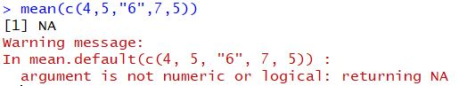
When you get a warning or error message, and you aren’t sure what it means, you should first try googling the message. Oftentimes, others have encountered your problem and have asked for help deciphering the message.
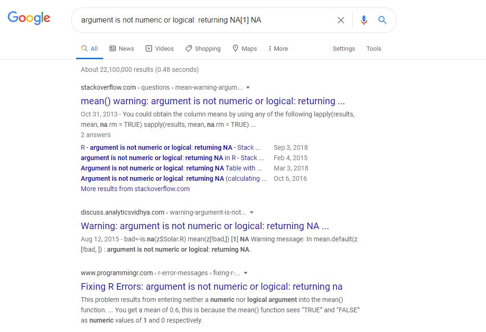
Scott from Stack overflow suggests converting the character “6” into a numeric variable. Let’s try that.
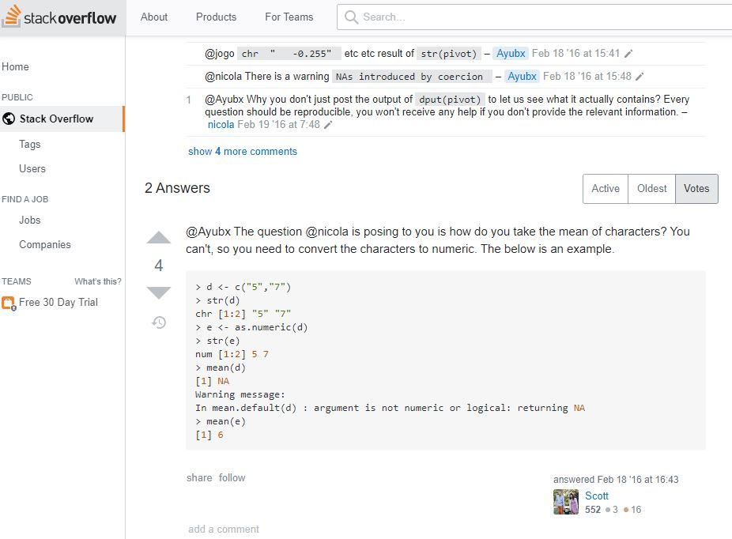
## [1] 5.47.7 Packages
A package can include code, documentation for that code, and/or data. A helpful way to think of packages is as a toolbox full of data analysis tools.
There are general purpose toolboxes that contain tools for running common analyses in psychology (e.g., psych), toolboxes for helping your run advanced statistical models (e.g., lavaan; lmer), toolboxes for text mining (e.g., tidytext), and toolboxes for plotting (e.g., ggplot2, gganimate). If you have a problem that needs to be solved, there will probably be a package for it.
7.7.1 Installing packages
Let’s say you’re gardeniing for the first time, and you need a hoe to clear some weeds. If you’ve never gardenend before, you don’t have a hoe lying around your house. You’ll need to go to your local hardware store and buy one. This is the idea behind “installing” a package – you’ve never used it before, so you’ll need to download it from CRAN (which is analagous to a Home Depot) or maybe a private repo (like going to a local mom ’n pop store). Once you’ve bought your hoe (or downloaded your package), it lives at your house (on your computer) and you don’t need to buy it (download it) again… unless someone builds a better version and you want to upgrade.
To install a package onto your computer, you simply pass the name of the package to install.packages(). As a demonstration, we install the psych package below. The psych package has several useful data analysis tools for psychologists.
Note. When installing packages, the package name must be enclosed in quotes: install.packages("psych") NOT install.packages(psych). You generally only need to install a package once.
7.7.2 Loading a package
Your hoe lives in your tool shed most of the time, but you need to get it out when you want to garden. This is like “loading” a package.
Just because we’ve installed a package to our computer doesn’t mean we have access to its functions. Buying a toolbox doesn’t necessarily give you access to its tools. You also have to open the toolbox. To open psych and load its functions, we use library().
Note. A package can be loaded with or without quotes: library("psych") OR library(psych). We have to load a package every time that R is restarted.
7.7.3 Try psych commands
Now that we have installed and loaded the psych package, let’s try out of some its commands.
Using corr.test() we can make a correlation matrix of the variables in mtcars.
Using skew(), we can look at the skew of all of the columns in mtcars.
We can also use t2d() to calculate the Cohen’s d for a t-value of 3.00 with 300 participants.
This is only a small subset of the functions available in the psych package, and psych is only one package of over 11,000 on CRAN (as of 2018). This is not to mention the tens of thousands of packages hosted on online repositories like GitHub. As Cory Costello noted during R Bootcamp, the question with R is never if but how.
7.8 Importing Data into R
The final topic that we will cover in this lab is how to load data into R. Over the course of your careers (and many times in this workshop) you will need to import data into R to be analyzed.
For this example, we will be using the planets data set from Star Wars. The data can be downloaded here.
You can use file-type-specific functions to load data into R (e.g., read.csv, read_excel). However, the rio package streamlines this process by having a single import function (import()) that infers the file type from its extension (e.g., .csv, .xlsx, .sav). Additionally, the here package makes it very easy to reference folders in your directory.
As we did for psych, if you don’t have these packages already, you will first need to install rio and here. You can install rio and here with the following code: install.packages(c("rio", "here")).
Second, we will need to load rio and here using the library functions. Then, we will import the data by using the import function from the rio package and the here function from the here package. In order to use the here function, we need to know which folder my dataset is saved in. In this case, the sw_planets.xlsx is saved in labs -> data. Finally, we will save the data into a variable, planets_data.
To ensure it was read in properly, we can look at the first six rows of the imported dataset by using the head() function.
We can also look at the last six rows by using the tail() function.
7.6 Comments
Comments are pieces of code text that are not interpreted by the computer. In R we use the octothorpe/pound sign/hashtag (
#) at the beginning of a line to denote a comment. The first and third line of code below are not evaluated, whereas the second and fourth line are.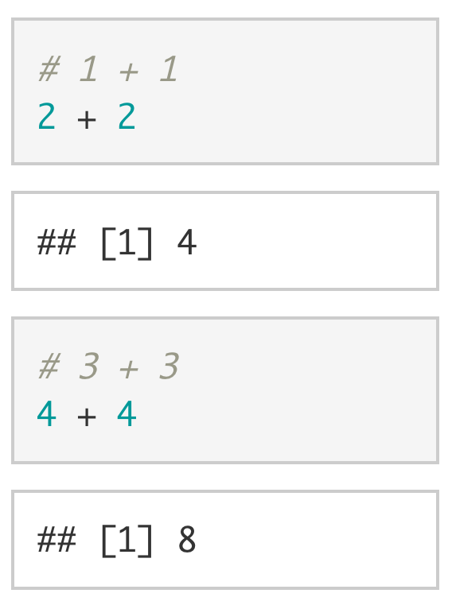
Comments are mostly used to remind yourself (or other people) what a piece of code does and why the code is written the way that it is. Below is a piece of code that checks if a string is a valid phone number. We can see that the comments explain, not only what each piece of code is doing, but also why the second piece of code was written the way that it was.